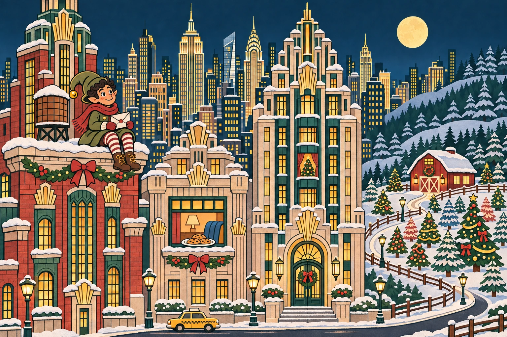

Las luces están casi listas
Nuestra pequeña Navidad.
Unos cuantos secretos te esperan. Este rincón abre el 1 de diciembre, May.
--Días
--Horas
--Minutos
--Segundos
Nos vemos aquí el 1 de diciembre. ♡

Vista previa
El progreso de esta vista se guarda por separado.
Cuatro regalos. Pequeños secretos. Tú y yo.
Nuestra pequeña Navidad.
Toca un rincón de la ciudad. Cada uno guarda una pequeña sorpresa para ti.
Azotea · Ventana · Granero · En casa
Mis regalos descubiertos 0 de 4
Pequeñas cosas, grandes sonrisas